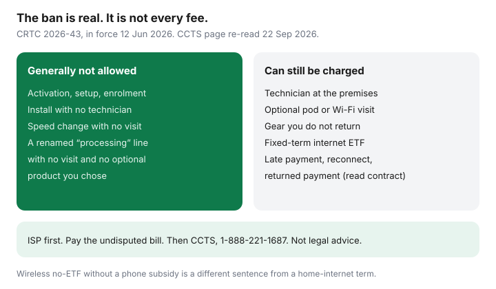

Internet · Canada
Activation and Modification Fees Banned (June 2026): What Your ISP Can Still Charge
From 12 June 2026, most Canadian internet and wireless providers are not supposed to charge you merely for starting a plan or changing it. Households are still seeing lines called activation, setup, enrolment, or “processing,” and they are still seeing charges that were never part of the ban: a technician in the driveway, a modem they did not return, a late payment, an early cancellation fee on a home-internet term. This page is the split. It is education, not a CCTS decision, and Saving Optimizer does not file complaints for you.
Disclosure: Education only. Not legal advice and not an ISP partnership. There is no affiliate offer on this page. Fee names on your bill can differ from the examples. The contract and the CRTC texts win.
Key takeaways
- Telecom Regulatory Policy CRTC 2026-43 implements section 27.04 of the Telecommunications Act. The Commission enforces the Code changes from 12 June 2026. CCTS published the household version on 2 September 2026.
- Generally prohibited on or after that date: new-account, connection, setup, and enrolment fees; installation fees with no technician; change fees with no visit, including speed changes.
- Still allowed when the contract says so: a reasonable fee for a technician at the premises, optional products you explicitly buy, reconnection after non-payment, equipment you do not return, unpaid device financing, and a fixed-term internet early cancellation fee.
- The wireless rule that bans an ETF when there is no subsidized phone is not a ban on home-internet ETFs. That distinction has its own guide.
- Dispute with the ISP first. Pay the rest of the bill. CCTS cannot rewrite a dollar amount your contract actually allows.
What the CRTC ban covers from June 2026
Section 27.04 says a provider must not charge a fee related to the activation or modification of a telecommunications service plan, or any other fee whose main purpose, in the Commission’s opinion, is to discourage you from changing the plan or cancelling. The amendments to the Act were in force earlier; CRTC 2026-43 says the Commission enforces the Code amendments starting 12 June 2026 so providers had time to change their systems.
The definition added to the Internet Code and the Wireless Code, from the policy, is: any fee incurred because you activate a new retail plan or modify an existing one, except reasonable fees for physical installation at your premises, or fees for additional products or services you explicitly chose. CCTS translates the prohibited examples as activation (new account, connection, setup, enrolment), installation with no technician, and plan changes or speed changes with no technician.
Two exceptions are doing all the work on real bills. A person who comes to the home to install service can still be billed. A Wi-Fi configuration visit, or extra equipment that is not required to deliver the service, can still be billed if you agreed to buy it. “We added a pod” is not automatically illegal. “We charged $50 to press activate” is the fact pattern the rule is about.

Fees that may still appear: equipment, late payment, NSF, a technician
CCTS’s allowed list, from the 2 Sep 2026 article re-read 22 Sep 2026, is the one to memorize:
| Charge | After 12 June 2026 |
|---|---|
| Activation, setup, enrolment, no-visit install, no-visit speed change | Generally not allowed |
| Technician physically installs at your premises | Can be allowed if the fee is reasonable |
| Optional product you explicitly chose (extra pod, Wi-Fi configuration) | Can be allowed |
| Reconnection after non-payment, bill reprint, some legacy maintenance fees | CCTS lists these as fees that are not activation or modification |
| Equipment not returned; unpaid device financing | Can be allowed if the contract says so |
| Early cancellation of fixed-term home internet | Can be allowed if disclosed. See the ETF guide. Month-to-month should not have an ETF. |
| Late payment, or a returned internet payment | Not an activation fee. Read the contract. A bank NSF cap is a banking rule, not an ISP rule. |
Late fees and returned payments sit outside section 27.04’s activation definition. They can still be unfair, or higher than the contract, and those fights are contract fights. Do not quote the activation ban at a late fee and expect it to vanish. Separately, federally regulated banks have a $10 cap on NSF fees for personal deposit accounts from 12 March 2026. That cap does not automatically rewrite an internet provider’s returned-payment line. If both appear, they are two fees. The banking one is covered in the personal-finance NSF guide; this page only warns you not to mix them up.
CRTC Notice of Consultation 2026-155, and the follow-up 2026-155-2, asked Bell, Rogers, and Telus to justify a short list of new charges: Bell’s device-handling charge, Telus SIM and eSIM purchase fees, and Rogers device set-up, shipping, and SIM fees. Those are mostly wireless hardware. CCTS has said it may accept complaints about that specific list and pause the merits while the Commission decides. An internet “activation” renamed “processing,” with no visit and no optional product, is not on that pause list. Ask the provider which exception they claim.
How to spot a banned fee on a quote or the first invoice
Before you pay a deposit or a first bill, circle every one-time line.
- The label includes activate, activation, connect, setup, enrolment, or “new account,” and nobody is coming to the home. That is the prohibited pattern.
- You changed speed in the app and a change fee posted the same day, with no appointment. Same pattern.
- The work order says “self-install” and the bill says “installation.” Ask them to point at the technician’s visit.
- The fee is dated before 12 June 2026. The ban is not retroactive in the policy’s enforcement date. You may still have a contract argument. You do not have this particular rule.
- You agreed in writing to a pod or a configuration visit. That can be an optional product. Cancel the product if you do not want it; do not pretend you never clicked it if you did.
Keep the checkout screenshot. The Internet Code’s permanent contract has to match what you agreed. A conflict, or a late contract, can open the 45-day cancel described in the Code guide. That is a different right from the fee ban, and it has a clock.
What to do if an ISP still charges an activation or modification fee
- Write to the ISP. Quote the amount, the date, and the label. Say you were activating or changing a plan, you did not buy an optional product, and no technician visited. Ask which exception under CRTC 2026-43 they are using.
- Give them a real chance: a person on the phone or in chat, and time to answer. Save names and dates. CCTS will ask whether you did this.
- Pay everything you do not dispute. CCTS’s own note: if you withhold a $30 activation fee, pay the rest. If the fee is found lawful, you still owe it. If it is not, the provider has to remove it.
- File at ccts-cprst.ca or 1-888-221-1687 (TTY 1-844-713-3010) if they refuse. Mail: P.O. Box 56067, Minto Place RO, Ottawa ON K1R 7Z1.
CCTS has also said it cannot change the dollar amount of a fee the contract allows. If the outcome you want is “make my $150 truck roll $0 because I dislike it,” and a technician did attend, the complaint may go nowhere. If the outcome you want is “remove a $50 setup fee on a self-install after 12 June 2026,” that is the file the rule was written for.
How this sits with the Internet Code and a CCTS complaint
The fee ban was written into the Codes. The rest of the Internet Code did not disappear. You still get a contract summary, trial periods when an ETF applies (15 days, or 30 if you self-identify as a person with a disability), usage alerts where the plan is capped, and rules for key-term changes. Large facilities-based ISPs are the core Code list: Bell, Cogeco, Eastlink, Northwestel, Rogers, SaskTel, Telus, Videotron, and Xplore. A smaller reseller can still be a CCTS member. Check participation if you are on TekSavvy, Oxio, or Fizz. Do not skip the provider step because the brand is small.
Use one file per fee. Mixing an ETF complaint, a missing promo credit, and an activation line in one angry letter makes the lawful fee look like the whole dispute. The ETF path is written up separately so this page does not pretend the ban deleted it.
A shopping checklist so you do not prepay an obsolete fee
- On every quote, ask: “List one-time fees. Which of them are a technician at the premises, and which are activation?”
- Refuse to pay a setup fee to “hold” an install date when the install is a mailed modem.
- If a winback email includes an activation credit, good. If it includes an activation charge on a self-install, send it back.
- When you move, a new address can justify a truck roll. It does not justify a second activation label on top. The move checklist keeps those apart.
- Screenshot the quote. If the first invoice adds a line, you have the before-and-after.
The rule is narrower than the headline “they banned all the fees.” It is still broad enough to take a junk setup charge off a Canadian internet bill. Read your line items as if the ban exists, because it does, and as if the exceptions exist, because they do too.
Sources & date stamps
- Telecom Regulatory Policy CRTC 2026-43 — definition of activation or modification fee; enforcement of Code amendments from 12 June 2026; section 27.04. Read 22 Sep 2026.
- Telecom Notice of Consultation CRTC 2026-155 and 2026-155-2 — show-cause on Bell device-handling, Telus SIM/eSIM, and Rogers device set-up, shipping, and SIM fees.
- CCTS, “New rules: What fees can internet and wireless phone providers charge?” (which-fees-are-allowed), posted 2 Sep 2026, re-read 22 Sep 2026 — prohibited examples, technician and optional-product exceptions, internet fixed-term ETF still listed, complaint steps, 1-888-221-1687.
- CRTC Internet Code, simplified — trial and contract rules that sit beside the fee ban. Used 22 Sep 2026.
Frequently asked questions
When did the activation and modification fee ban start?
Telecom Regulatory Policy CRTC 2026-43 set the rule. The Commission enforces the Code amendments from 12 June 2026. CCTS restated the household version on 2 September 2026. A fee dated before 12 June 2026 is a different argument from a fee dated on or after that day.
Can my ISP still charge for a technician visit?
Yes, when a technician must physically install the service or equipment at your premises, and the fee is reasonable. CCTS also says you can be charged for an optional product you explicitly agree to buy. A setup fee with no visit, and a speed-change fee with no visit, are in the prohibited examples.
Did this ban cancel home internet early cancellation fees?
No. CCTS says providers can still charge certain cancellation fees agreed in the contract, including early cancellation for internet on a fixed term, equipment non-return, and an unpaid device-financing balance. The wireless no-ETF rule applies when there is no subsidized phone. Read the internet ETF guide before you cancel a term.
What if the ISP renamed an activation fee?
Ask which exception they are using: a real technician visit, or an optional product you chose. A processing or enrolment line with no visit still has to survive section 27.04. CRTC Notice of Consultation 2026-155 is looking at a short list of renamed device, SIM, and shipping charges, mostly wireless. Until that file closes, do not treat every new label as legal.
Will the CCTS change the price of a fee my contract allows?
No. CCTS says it cannot rewrite the dollar amount of fees charged under the contract. It can help when the fee breaks the contract, the Codes, or the 2026-43 prohibitions. Contact the ISP first, keep dates, pay the undisputed part of the bill, then file if they refuse.